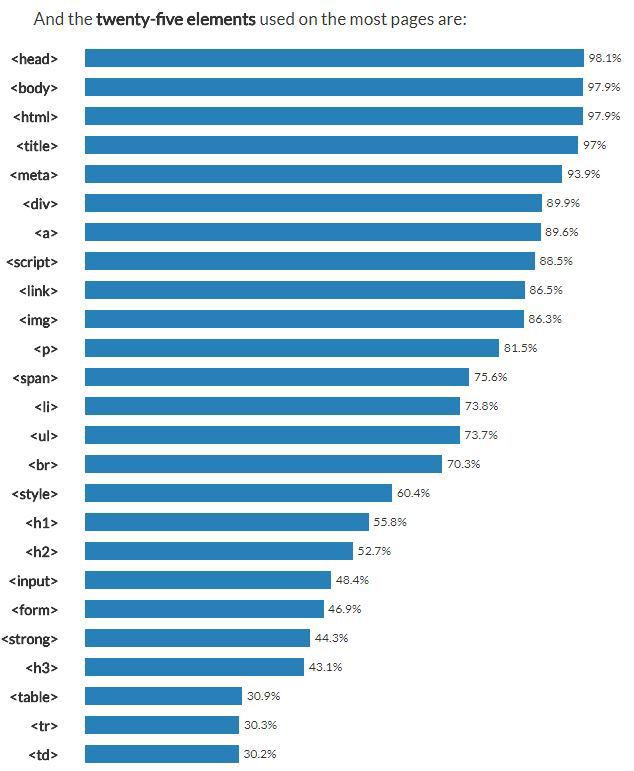

HTML
인터넷 서비스의 하나인 월드 와이드 웹을 통해 볼 수 있는 문서를 만들 때 사용하는 웹 언어의 한 종류이다.
특히 하이퍼텍스트를 작성하기 위해 개발되었으며, 인터넷에서 웹을 통해 접근되는 대부분의 웹 페이지들은 HTML로 작성된다.

Hyper Text Markup Language(HTML)은 문서의 글자크기, 글자색, 글자모양, 그래픽, 문서이동(하이퍼링크) 등을 정의하는 명령어로서 홈페이지를 작성하는 데 쓰인다. HTML에서 사용하는 명령어는 태그(tag)라고 하는데 꺽쇠괄호"<>"를 사용하여 나타낸다. 일반적으로 태그는 시작과 끝을 표시하는 2개의 쌍으로 이루어져 있으나 "img", "br"등의 태그와 같이 시작태그만으로 그 영향을 나타내는 경우도 있으며, 종료 태그의 이름은 슬래시 문자[/]로 시작된다. 이와같이 HTML로 작성된 문서를 HTML문서라 하며 이 HTML로 작성된 문서를 웹 브라우저가 해석하여 이용자에게 보여주게 된다. HTML에서는 문서가 별도의 코드(code)를 인식하여 완벽한 하이퍼텍스트를 만들 뿐만 아니라 단어 또는 단문을 인터넷의 다른 장소나 파일로 연결시킬 수 있다.
twenty-five elementsused on the most pages are:
HTML은 전자 문서의 서식을 정의하기 위해 만들어졌으며, 국제표준 SGML의 부분 집합으로 정의되었다. HTML은 SGML에서 특히 하이퍼텍스트를 강조하여 만들어진 언어이며, 아스키코드로 된 일반적인 텍스트로 구성되었다. 이 언어는 별도 컴파일러가 필요치 않으며, 웹 브라우저에서 해석이 가능한 사용하기 쉬운 언어로 각광을 받고 있다.
생활코딩 HTML
2021년 3월 3일 오후 5시 50분
생활코딩 Web1편 Internet/html편 수업을 모두 수강하였다.
단지 웹을 배우는 것이 아닌 공부에 대해 그리고 웹과 인터넷에 대해 철학적인 생각을 하도록 만드는 수업이었다.
태그를 배우고 클라이언트와 서버에 대해 배웠으며 내가 직접 웹서버를 설치하여 사용해보기도 하였다.
그리고 사이트에 동영상 삽입기능, 채팅기능, 댓글기능을 구현하는 방법을 배웠다.
아직은 잘 모르겠지만 수업을 듣고 공부할수록 조금 더 이쁘고 보기 편하고 용이한 사이트를 만들어보고 싶다는 생각이 들기는 한다.
이 작은 한걸음이 나를 개발자의 길로 인도할 수 있을지는 모르겠지만 내 인생이 끌려다니고 생각없이 거니는 것이 아닌 거친 땅에 맨발로 걷더라도 내가 눈을 뜨고 걸었으면 하는 바램이다.
- 태그
- < h1 >< /h1 >
- < strong >< /strong >
- < u >< /u >
- < br >
- < p >< /p >
- < img src="" >
- < li >< /li >
- < ul >< /ul >
- < ol >< /ol >
- < title >< /title >
- < head >< /head >
- < body >< /body >
- < a >< /a >
- 부록
- Inter과 Web의 차이
- 웹호스팅
- 동영상 첨부기능
- 댓글기능
- 채팅기능
제목(headline)을 의미하며 h1~h6까지 있다. 숫자가 커질수록 소제목을 의미한다.
해당 태그 안에 있는 글자를 굵게 표시하는 역할을 한다.
해당 태그안에 있는 글자에 밑줄을 표시하는 역할을 한다.(Underline)
줄바꿈 역할을 수행한다. 특이한 점은 닫는 태그가 없다.
단락을 나누는 태그이다. 단락을 나누기 때문에 줄바꿈도 자동으로 된다. 웹페이지의 정보를 나타내는데에 중요한 역할을 한다.
이미지를 첨부하는 태그이다. src 뒤에는 이미지 파일의 이름이 오면 된다. 그리고 그 뒤에 width =""과 같이 이미지의 크기를 정해줄 수 있다.
이러한 것은 img 태그의 속성이라고 한다.
List 말 그대로 목차를 나타낸다.
< li >태그의 부모역할을 한다. 해당 태그 안에 < li >태그를 사용하면 각 목차 앞에 기호가 붙는다.(Unordered List)
< li >태그의 부모역할을 한다. 해당 태그 안에 < li >태그를 사용하면 각 목차 앞에 번호가 붙는다.(Ordered List)
웹페이지의 제목을 나타낸다.
웹페이지의 서문을 나타낸다.
웹페이지의 본문을 나타낸다.
링크를 거는 역할을 수행한다.
< a href= "주소" target="_block" title="툴팁내용">~~< /a >
"target="_block""은 링크가 새로운 탭에서 열리도록 한다.
비유하여 말하자면 Internet이 도시라고 할 때 Web은 건물 한 채 이다.
HTML은 스태틱 웹 호스팅이고 python, php, Ruby는 다이내믹 웹 호스팅이다.
youtube영상이라고 가정했을 때 영상 하단에 공유 버튼을 누르고 퍼가기를 누르면 나오는 코드를 복사하여
영상을 넣고자하는 위치에 붙혀넣기하면 된다.
DISQUS라는 무료 댓글 기능 제공 사이트에 가입하여 코드를 복사하면 된다.
주의 할 점은 웹서버를 이용하여 사이트를 열어야 기능이 정상적으로 작동된다는 점이다.
TAWK라는 무료 채팅 기능 제공 사이트에 가입하여 코드를 복사하면 된다.
주의 할 점은 웹서버를 이용하여 사이트를 열어야 기능이 정상적으로 작동된다는 점이다.